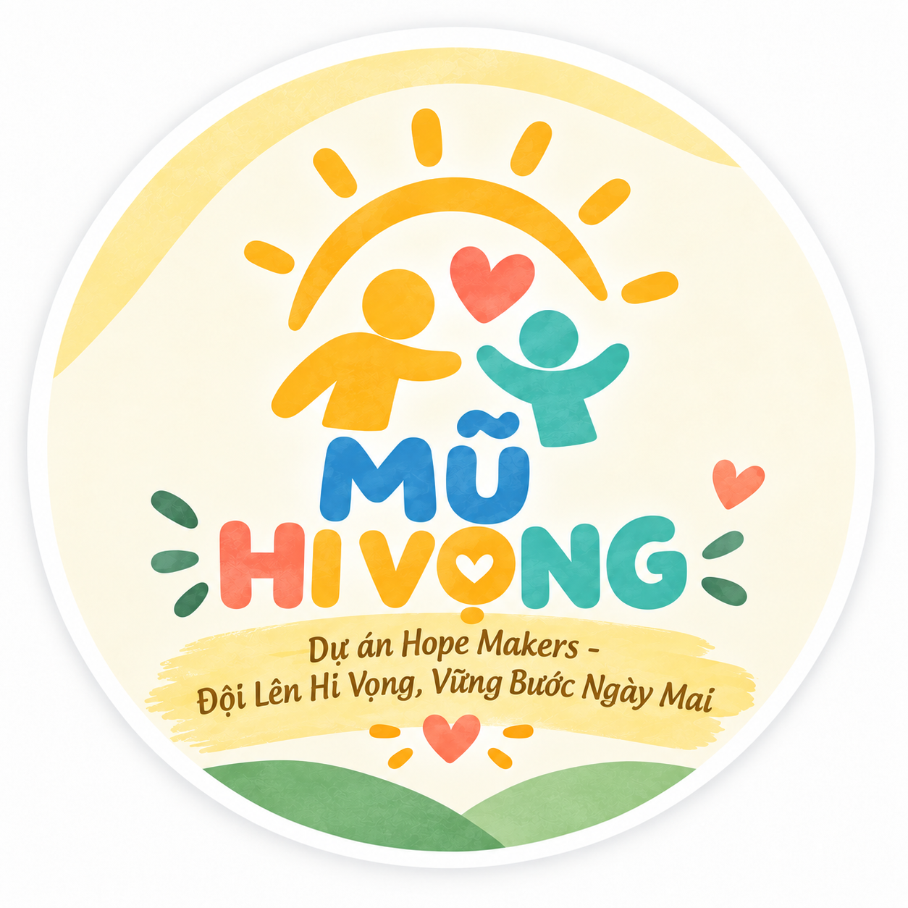
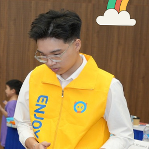
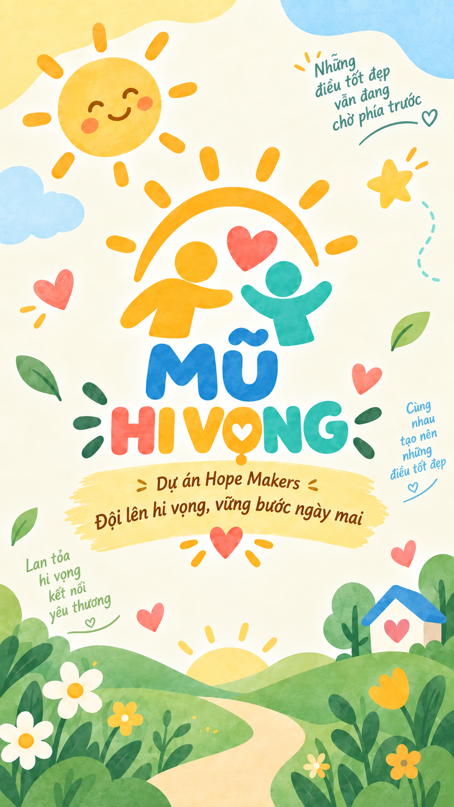

BẢN ĐỀ XUẤT
Dự án “Mũ Hi Vọng”
Nhóm: Hope Makers
Môn Học: SSG105 - Kỹ năng làm việc nhóm
Giảng Viên Hướng Dẫn: ThS. Hà Thị Hải Yến
Hà Nội, Tháng 09/2026

Nhóm: Hope Makers
Môn Học: SSG105 - Kỹ năng làm việc nhóm
Giảng Viên Hướng Dẫn: ThS. Hà Thị Hải Yến
Lời đầu tiên, nhóm dự án Hope Makers xin gửi đến Quý thầy cô bộ môn Social Skills and Growth (SSG105), lớp IA2009, các y bác sĩ, các tổ chức xã hội và các bạn sinh viên Đại học FPT lời chào trân trọng và lời chúc sức khỏe, an lành nhất!
Trong quá trình học tập và quan sát cộng đồng, chúng em có dịp ghé thăm các khoa phòng ung thư nhi. Hình ảnh những em nhỏ với ánh mắt ngây thơ, nụ cười hồn nhiên nhưng mái đầu đã trút sạch tóc sau những đợt hóa trị dài ngày đã để lại niềm xúc động sâu sắc trong lòng nhóm. Rụng tóc do hóa trị (CIA) không chỉ khiến da đầu non nớt của các em bị nhiễm lạnh, ngứa rát, mà còn gieo vào lòng trẻ thơ cảm giác tự ti, e ngại ánh nhìn của mọi người xung quanh.
Những bộ tóc giả trên thị trường thường nặng nề, bí bách và dễ gây kích ứng da đầu; trong khi những chiếc mũ thông thường lại thiếu đi tính y tế và màu sắc vui tươi. Từ thực tế đó, nhóm Hope Makers đã xây dựng dự án "Mũ Hi Vọng" với tinh thần: "Đội Lên Hi Vọng, Vững Bước Ngày Mai". Dự án kết hợp mô hình giá trị kép: tái chế vải vụn cotton sạch để giảm rác thải dệt may, kết nối xưởng may tạo việc làm cho người khuyết tật để may thành những chiếc mũ cotton êm mềm đạt chuẩn y tế, và tổ chức workshop nghệ thuật để các bé tự tay vẽ lên chiếc mũ ước mơ của chính mình.
Mỗi sự chung tay – từ một mảnh vải vụn sạch, một lời động viên, một sản phẩm gây quỹ hay một cánh tay tình nguyện – đều góp phần dệt nên những chiếc mũ chở che nụ cười tuổi thơ. Nhóm Hope Makers xin trân trọng cảm ơn và kính mong nhận được sự đồng hành của Quý vị!
| 5 NGUYÊN TẮC VÀNG LÀM VIỆC NHÓM | QUY ƯỚC NỘI BỘ & KHEN THƯỞNG KỶ LUẬT |
|---|---|
|
1. Đúng giờ (Punctuality): Tham gia đầy đủ các buổi họp đúng giờ; hoàn thành và bàn giao phần việc cá nhân trước hạn tối thiểu 12 giờ. 2. Trách nhiệm (Accountability): Chủ động thực thi nhiệm vụ theo phân công RACI; chịu trách nhiệm tuyệt đối về chất lượng đầu ra, không đùn đẩy. 3. Tôn trọng (Respect): Lắng nghe đa chiều, tôn trọng ý kiến đồng đội; phản biện xây dựng trên tinh thần cầu thị vì sự thành công chung. 4. Minh bạch (Transparency): Công khai 100% tài chính, nguồn quỹ gây quỹ, biên lai thu chi và tiến độ công việc trên Google Drive chung. 5. Đồng hành (Collaboration): Chủ động tương trợ, sẻ chia khó khăn với đồng đội; giữ vững nhiệt huyết và tinh thần đoàn kết. |
Quy chế Khen thưởng Cống hiến:
Thành viên có sáng kiến xuất sắc, hoàn thành vượt mức tiến độ hoặc phụ trách khối lượng công việc quan trọng sẽ được biểu dương trong báo cáo tổng kết môn SSG105, ưu tiên xét thưởng danh hiệu Hope Maker of the Month và cộng điểm đánh giá chéo nội bộ.
Quy chế Kỷ luật & Trách nhiệm:
• Trễ deadline lần 1 không báo trước: Nhận thêm nhiệm vụ trực booth sự kiện và chuẩn bị hậu cần cho buổi làm việc tiếp theo.
• Vi phạm tiến độ lần 2 hoặc vắng họp không phép: Bị trừ điểm đánh giá hiệu quả cá nhân (Peer Review) và phải nộp bản giải trình bù đắp tiến độ trong 24 giờ. |
Dự án “Mũ Hi Vọng” được phát triển và vận hành bởi tập thể 7 sinh viên K20 - K21 Đại học FPT, kết tinh năng lực liên ngành từ An toàn thông tin, Trí tuệ nhân tạo, Vi mạch bán dẫn đến Digital Marketing, với chung mục tiêu mang lại giải pháp y tế êm mềm và niềm tin yêu cuộc sống cho bệnh nhi ung thư.

Nghiên cứu đối sánh đa chiều các mô hình tiền nhiệm của sinh viên Đại học FPT và sáng kiến xã hội tiêu biểu; nhận diện khoảng trống y sinh thể chất và chuyển hóa bài học kinh nghiệm thành mô hình tác động tuần hoàn của Mũ Hi Vọng.
| Tiêu Chí Đánh Giá | Dự Án "Họa Nắng" | Dự Án Thiện Nguyện "Sẻ" | BCNV & Mũ Len Mùa Đông | Dự Án "Mũ Hi Vọng" (Hope Makers) |
|---|---|---|---|---|
| 1. Bản chất giải pháp & Tiếp cận | Truyền thông số & phim ngắn cảm xúc; tặng suất ăn, quà tặng thời điểm. | Cứu trợ thiện nguyện một chiều, thăm hỏi & trao tặng nhu yếu phẩm. | Tóc giả che khuyết điểm diện mạo hoặc mũ len sưởi ấm mùa đông. | Sản phẩm y sinh chuyên biệt 24/7 kết hợp Workshop Art Therapy chữa lành tâm lý chủ động. |
| 2. Can thiệp y sinh da đầu | Không có giải pháp can thiệp thể chất cho vùng da đầu tổn thương. | Không có sản phẩm chăm sóc thể chất cho người bệnh. | Nặng đầu (300g), bí khí, ngứa rát, phát tán bụi xơ len dị ứng nang lông. | 100% Cotton Compact y tế, may lộn giấu chỉ phẳng hoàn toàn, êm ái, chống trầy xước & ngừa nhiễm trùng. |
| 3. Tạo sinh kế xã hội | Vận động gây quỹ ủng hộ viện phí; không tạo việc làm xã hội. | Tặng quà trực tiếp; chưa tạo ra việc làm và thu nhập tự chủ lâu dài. | Gia công tóc giá thành cao; đan len tự phát từ tình nguyện viên. | Sinh kế tự chủ bền vững: Trả thù lao 25.000đ/mũ cho thợ may khuyết tật, tạo việc làm hòa nhập thực chất. |
| 4. Vật liệu & Tính tuần hoàn | Không có quy trình thu hồi hay tái chế tài nguyên vật chất. | Tiêu thụ sản phẩm thương mại thông thường mua mới đóng gói. | Tóc thật cần hóa chất dưỡng; sợi nhân tạo khó phân hủy sinh học. | Kinh tế tuần hoàn Upcycling 0đ: Thu gom vải cotton thừa mới 100% từ chuỗi cắt may công nghiệp & ĐH FPT. |
| 5. Chuẩn hóa KPI & Thích ứng | Đo lường bằng lượt view/reach mạng xã hội và suất ăn thiện nguyện. | Đo lường qua số suất quà trao tặng tại trung tâm bảo trợ. | Chi phí đắt đỏ (1-3 triệu/bộ tóc); mũ len chỉ dùng được vào mùa đông. | 70 chiếc mũ chuẩn y tế cho ~70 bệnh nhi nội trú Khoa Nhi Ung bướu BV K Tân Triều; nhẹ êm, thích ứng 4 mùa. |
Trẻ dưới 16 tuổi điều trị nội trú tại Khoa Nhi Ung bướu - BV K Tân Triều (~70 bệnh nhi). Rụng tóc (CIA) do hóa xạ trị gây sang chấn tâm lý và mất nhiệt cơ thể sâu sắc.
Mất lớp tóc bảo vệ, da đầu mỏng manh dễ viêm nang lông, nhiễm lạnh và cực kỳ mẫn cảm với chất liệu vải tổng hợp nhiều sợi nylon công nghiệp.
Thu gom vải vụn cotton sạch chất lượng cao từ chuỗi may mặc, tạo việc làm và thu nhập xứng đáng cho thợ may khuyết tật yếu thế tại địa phương.
"Trẻ rụng tóc rất dễ mất nhiệt qua da đầu và viêm nang lông. Sản phẩm cotton giấu chỉ y tế vừa bảo vệ thể chất vừa hỗ trợ liệu pháp Art Therapy giúp trẻ giảm đau đớn."
"Mỗi lần nhìn con trùm chăn khóc vì rụng từng mảng tóc, gia đình xót xa lắm. Mua mũ ngoài chợ thì bé kêu ráp ngứa. Chiếc mũ mềm mại bé tự vẽ sẽ là nguồn an ủi lớn cho con."
"Được tự tay may những chiếc mũ ấm áp tặng các em nhỏ ung thư giúp chúng tôi cảm thấy mình có ích. Thu nhập 25.000đ/mũ mang lại sinh kế tự chủ và niềm tự hào lao động."
Hóa/xạ trị gây rụng tóc đột ngột (CIA) sau 2-3 tuần, gây sốc tâm lý và mặc cảm sâu sắc. Vùng đầu mất tóc làm thất thoát 30-40% nhiệt lượng, khiến trẻ dễ cảm lạnh và sốt hạ bạch cầu.
Hàng rào biểu bì bị tổn thương do hóa chất; da đầu trẻ cực kỳ mẫn cảm, mỏng manh và suy giảm miễn dịch, rất dễ bị viêm nang lông hoặc nhiễm trùng thứ phát nếu tiếp xúc vải không vô trùng.
Mũ len hoặc vải tổng hợp thô cứng trên thị trường gây bí bách, ngứa ngáy; ma sát từ đường may nổi chà xát gây trầy xước và phá hủy các mầm nang tóc non nớt đang cố gắng phục hồi.
Tình huống: Bệnh viện siết quy định kiểm soát nhiễm khuẩn, hạn chế tụ tập đông người.
Giải pháp: Chuyển sang mô hình "Hộp Quà Hy Vọng Gửi Tận Giường Bệnh". Mũ và bộ kit được đóng gói vô trùng hút chân không kèm clip hướng dẫn vẽ qua mã QR, nhờ điều dưỡng và phụ huynh hỗ trợ bé vẽ tại phòng bệnh.
Tình huống: Vải vụn quyên góp bị lẫn sợi nhân tạo, không đạt chuẩn y tế da đầu.
Giải pháp: Trích quỹ dự phòng mua trực tiếp 2 cuộn vải thun cotton compact 100% nguyên cây chuẩn xuất khẩu với giá trợ giá cộng đồng; huy động CLB May vá FPT hỗ trợ xưởng may cho kịp tiến độ.
Bảo vệ da đầu mỏng manh; xua tan tự ti mặc cảm rụng tóc; mang lại niềm vui sáng tạo tuổi thơ và tiếp thêm nghị lực vượt qua phác đồ điều trị.
Tạo việc làm thủ công phù hợp; chi trả thù lao hỗ trợ 25.000đ/sản phẩm; tôn vinh giá trị lao động yếu thế và thúc đẩy hòa nhập xã hội bình đẳng.
Tái chế hơn 15kg vải thừa sạch dệt may; rèn luyện kỹ năng làm việc nhóm, thực thi dự án và lan tỏa tinh thần trách nhiệm cộng đồng của sinh viên ĐH FPT.
| Thời gian | Công việc trọng tâm | Đầu mối phụ trách | Sản phẩm đầu ra (Deliverables) |
|---|---|---|---|
| Tuần 1 - 4 | Khảo sát Khoa Nhi BV K & Thu gom vải sạch FPT | Hậu cần, Leader | Biên bản khảo sát BV K; 15kg vải cotton sạch; Hợp đồng may xưởng khuyết tật |
| Tuần 5 - 6 | Gây quỹ sảnh Delta & Gia công sản xuất 70 mũ | Tài chính, Hậu cần, PR | Đạt 100% chỉ tiêu gây quỹ (3.836.000đ); 70 chiếc mũ cotton giấu chỉ hoàn thiện |
| Tuần 7 | Kiểm định y tế vô trùng, đóng gói kit vẽ màu | Thiết kế, Đối ngoại | 70 mũ vô trùng da liễu; 70 bộ kit màu vẽ an toàn ASTM D-4236 & hộp quà kraft |
| Tuần 8 | Tổ chức 01 buổi Workshop & Trao tặng 70 mũ | Toàn nhóm Hope Makers | 70 bệnh nhi Khoa Nhi ung bướu BV K Tân Triều nhận mũ & vẽ tranh; Phóng sự ảnh |
| Tuần 8 | Quyết toán thu chi minh bạch & Báo cáo tổng kết | Leader, Tài chính, Nội dung | Báo cáo tài chính công khai, sao kê minh bạch; Slide & Hồ sơ bảo vệ SSG105 |
| Tuần | Lịch đăng | Kênh | Định dạng | Tuyến nội dung trọng tâm | Phụ trách | Trạng thái | KPI Mục tiêu |
|---|---|---|---|---|---|---|---|
| W1 | 15/07 | Fanpage | Brand ID & Letter | Công bố Thư ngỏ & Bộ nhận diện dự án "Mũ Hi Vọng" | Tuấn Anh (Media) | Hoàn thành | 2.200 Reach / 220 tác |
| W3 | 28/07 | Fanpage, Reels | Photo Album | Bộ ảnh: "Điều gì đau lòng hơn kim truyền?" (Tác hại rụng tóc) | Mai Tân (Content) | Hoàn thành | 3.500 Reach / 380 tác |
| W5 | 12/08 | TikTok, Reels | Short Video 60s | Phóng sự: "Bàn tay người thợ may đặc biệt" & Kêu gọi gom vải | Thiện Nhân (PR) | Đang chạy | 4.800 Reach / 450 tác |
| W6 | 18/08 | Fanpage, Booth | Livestream + Minigame | Khai mạc Booth Sảnh Delta; Minigame nhận Sticker chiến binh | Nguyên Khánh (ĐN) | Chuẩn bị | 4.200 Reach / 520 tác |
| W7 | 24/08 | Fanpage, TikTok | Infographic / Teaser | Đếm ngược Workshop Bệnh viện K; Kiểm định 70 chiếc mũ vô trùng | Tuấn Anh, Mai Tân | Chuẩn bị | 3.200 Reach / 280 tác |
| W8 | 28/08 | Đa kênh (All) | Recap Video & Sao kê | Phóng sự nụ cười bé thơ tại BV K Tân Triều; Sao kê minh bạch 100% | Minh Dũng, Kim Yến | Chuẩn bị | 5.500 Reach / 650 tác |
| TỔNG KPI TRUYỀN THÔNG 8 TUẦN CHIẾN DỊCH: | 23.400 Reach / 2.500 tác | ||||||

| STT | Hạng mục công việc / Vật phẩm | Số lượng | ĐVT | Đơn giá (VNĐ) | Thành tiền (VNĐ) |
|---|---|---|---|---|---|
| A. CHI PHÍ SẢN XUẤT MŨ VẢI Y TẾ (QUY MÔ 70 CHIẾC MŨ) | |||||
| 1 | Vải thun cotton compact 100% kháng khuẩn chuẩn xuất khẩu bổ sung | 10 | kg | 140.000 | 1.400.000 |
| 2 | Tiền công cắt may 2 lớp lộn giấu chỉ tại xưởng thợ may khuyết tật | 70 | chiếc | 25.000 | 1.750.000 |
| B. CHI PHÍ BỘ KIT NGHỆ THUẬT & QUÀ TẶNG BỆNH NHI (70 SUẤT) | |||||
| 3 | Bút vẽ màu trên vải không độc hại ASTM D-4236 (12 màu/bộ) | 10 | bộ | 50.000 | 500.000 |
| 4 | Sticker ủi nhiệt hình linh vật hoạt hình Hope Maker | 200 | miếng | 2.000 | 400.000 |
| 5 | Hộp quà kraft quai xách cao cấp + Giấy rơm tiệt trùng + Thiệp chúc | 70 | bộ | 15.000 | 1.050.000 |
| C. CHI PHÍ TRUYỀN THÔNG, HẬU CẦN & SỰ KIỆN TẠI VIỆN | |||||
| 6 | In ấn Standee, Banner Booth Delta & Backdrop Workshop BV K | 2 | cái | 150.000 | 300.000 |
| 7 | Suất quà dinh dưỡng (sữa tươi tiệt trùng, bánh mềm yến mạch y tế) | 70 | suất | 12.000 | 840.000 |
| 8 | Chi phí vận chuyển nguyên vật liệu Hòa Lạc - BV K Tân Triều (2 chiều) | 2 | chuyến | 130.000 | 260.000 |
| D. QUỸ DỰ PHÒNG RỦI RO PHÁT SINH & HỖ TRỢ Y TẾ (7.1%) | |||||
| 9 | Quỹ dự phòng rủi ro biến động giá / hỗ trợ y tế khẩn cấp tại viện | 1 | gói | 500.000 | 500.000 |
| TỔNG KINH PHÍ DỰ KIẾN (A + B + C + D): | 7.000.000 VNĐ | ||||
| Rủi ro tiềm ẩn | Mức độ | Phương án phòng ngừa & Xử lý khi xảy ra |
|---|---|---|
| Y tế: Dị ứng da đầu | CAO | Chỉ dùng 100% cotton thun mềm, giặt sấy nhiệt độ cao khử khuẩn; bút vẽ có chứng nhận an toàn ASTM D-4236 (Non-toxic). |
| Tiến độ: Chậm gia công | TRUNG BÌNH | Chốt hợp đồng trước 10 ngày; chia giao làm 2 đợt; lập danh sách CTV may dự phòng tại trường ĐH FPT. |
| Y tế khẩn cấp: Sức khỏe bệnh nhi chuyển biến xấu | CAO |
Phương án ứng phó y tế 4 cấp độ: • Kết nối trực tiếp: Phối hợp chặt chẽ với bác sĩ/điều dưỡng trực Khoa Nhi Ung bướu BV K Tân Triều thường trực tại sự kiện. • Cơ sở dự phòng: Bố trí phòng y tế dự phòng vô trùng với giường nghỉ và thiết bị hỗ trợ ngay sát sảnh workshop. • Dừng khẩn cấp: TNV giám sát 1:1; dừng ngay hoạt động nếu bé mệt mỏi, sốt, chóng mặt. • Quy trình cấp cứu: Lập tức đưa bé về phòng bệnh hoặc bàn giao bác sĩ chuyên khoa cấp cứu theo phác đồ bệnh viện. |
| Thủ tục: Viện hoãn workshop | THẤP | Kích hoạt ngay Backup Plan 1: Đóng gói hộp quà vô trùng gửi điều dưỡng trưởng trao tận phòng bệnh. |
Bản đề xuất dự án "Mũ Hi Vọng" được hoàn thiện với trọn vẹn lòng nhân ái, trách nhiệm xã hội và chuẩn mực học thuật cao nhất của sinh viên Đại học FPT. Toàn đội cam kết công khai minh bạch 100% nguồn quỹ gây quỹ, biên lai thu chi và nỗ lực tối đa để mang lại giá trị chở che thiết thực nhất cho các bệnh nhi ung thư.
Dự án Mũ Hy Vọng - Hope Makers.docx.